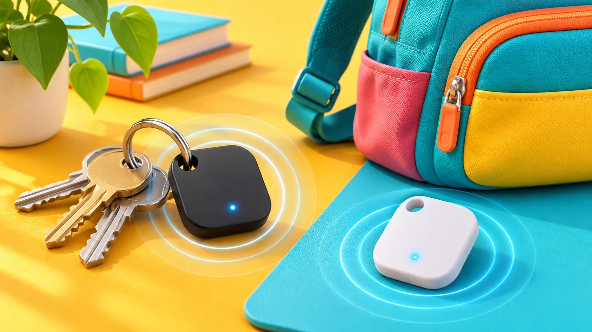

Accessories · Field note 064
Galaxy SmartTag3 reaches Samsung’s online store
The compact tracker brings longer battery life and support for both Galaxy and iOS devices.

Samsung’s Galaxy SmartTag3 is now available online, according to 9to5Google’s November 6 report. This is an availability update for a tracker announced September 30.
Samsung lists U.S. prices of $29.99 for one and $99.99 for four, in black and white. Its smaller body drops the built-in attachment loop, with accessories providing alternative ways to secure it.
The company rates battery life at up to 550 days in standard use and includes IP67 water and dust resistance. Tracking uses the Galaxy Find Network.
Compatibility needs attention: iOS supports core finding and sharing, but Samsung says Compass View, Ring Phone, and Left Behind Alert are unavailable on iOS.